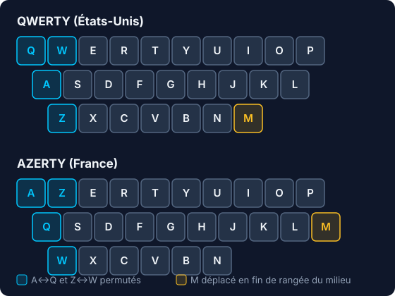
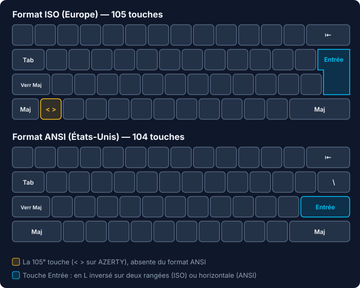

Histoire du clavier AZERTY
Qui l’a inventé ? Pourquoi ces choix étranges ? Ce qui est documenté, ce qui est contesté — et ce que personne ne sait.
L’AZERTY est l’un des objets les plus utilisés de France — et l’un des plus mal documentés. Son inventeur est inconnu, ses choix les plus commentés n’ont jamais été expliqués, et une bonne partie de ce qu’on lit à son sujet est légende. Cette page fait le tri, question par question, avec les sources.
Chaque réponse porte un verdict honnête. Quand la réponse est « on ne sait pas », nous l’écrivons : sur ce sujet, les inconnues assumées valent mieux que les explications inventées. Quand une hypothèse mérite d’être racontée, elle est clairement présentée comme telle — jamais comme un fait.
Publié le 22 juillet 2026 · Sommaire : Origines · Les choix qui étonnent · Ce que l’AZERTY ne sait pas faire · Un AZERTY ? Non, des AZERTY · La normalisation · Le clavier physique · Débats et recherche
🕰️ Les origines
Pourquoi le clavier français est-il en AZERTY et pas en QWERTY ? Contesté
Le socle est établi : l’AZERTY dérive du QWERTY américain et apparaît en France dans les années 1890, comme adaptation locale des machines à écrire importées (Wikipédia). La France n’a pas inventé son clavier à partir de rien : elle a reçu une machine américaine déjà standardisée, et l’a modifiée à la marge — quelques lettres échangées, des accents ajoutés, la ponctuation réorganisée.
Le reste ne l’est pas. Aucune source d’époque — catalogue de fabricant, brevet, correspondance commerciale — n’explique pourquoi ces permutations de lettres précisément (A↔Q, Z↔W, déplacement du M). Les explications qui circulent — faire de la place aux accents, améliorer l’ergonomie du français — sont des reconstructions rétrospectives : plausibles, jamais démontrées. Et elles ont un défaut logique : les permutations de lettres n’ont rien à voir avec les accents, qui ont été ajoutés sur d’autres touches. On peut expliquer pourquoi le clavier français a des accents ; personne n’a jamais expliqué pourquoi il s’appelle AZERTY.
Qui a inventé le clavier AZERTY, et quand ? Inconnu
Personne ne le sait — et ce n’est pas faute d’avoir cherché. Le contraste avec le QWERTY est frappant : côté américain, un inventeur identifié (Christopher Latham Sholes), un brevet daté (1878), une entreprise (Remington) et une chronologie documentée. Côté français : ni inventeur nommé, ni brevet, ni document fondateur. Les contributeurs de Wikipédia documentent depuis 2009, sur la page de discussion de l’article, des recherches de sources primaires restées infructueuses.
Une seule borne chronologique est solide. En 1907, le sténographe Albert Navarre propose une disposition alternative, la ZHJAY, conçue à partir des fréquences du français. Elle échoue commercialement — et la raison de cet échec est éclairante : les dactylographes professionnelles étaient déjà formées à l’AZERTY et refusaient de réapprendre. Autrement dit, en 1907, l’AZERTY était déjà un standard suffisamment installé pour repousser un concurrent mieux pensé. Sa naissance se situe donc quelque part dans la dernière décennie du XIXe siècle, sans qu’on puisse la dater ni l’attribuer.
D’où vient le clavier QWERTY, dont l’AZERTY dérive ? Contesté
La première machine à écrire produite en série, développée par Christopher Latham Sholes, est commercialisée par Remington à partir de 1873. Le récit traditionnel, répété partout depuis un siècle, attribue la disposition à un impératif mécanique : espacer les lettres souvent frappées ensemble pour éviter que les tiges d’impression ne se coincent entre elles.
Une étude académique japonaise (Yasuoka & Yasuoka, « On the Prehistory of QWERTY », 2011) propose une généalogie différente, appuyée sur les prototypes successifs de Sholes : le clavier se serait formé au service des opérateurs télégraphiques transcrivant du morse américain à la volée — un usage où certaines lettres ambiguës du code devaient être voisines pour être corrigées vite. La disposition se serait ensuite figée avec le Teletype et l’industrie naissante de la dactylographie.
Qui a raison ? Sholes n’a jamais expliqué ses choix, et les deux récits coexistent aujourd’hui dans la littérature. C’est une leçon d’humilité qui vaut pour toute cette page : même le clavier le plus documenté du monde garde ses zones d’ombre.
Le clavier QWERTY a-t-il été conçu pour ralentir la frappe ? Documenté : non
C’est l’idée reçue la plus répandue de toute l’histoire du clavier, et elle est fausse. L’argument décisif est chronologique : la dactylographie rapide à dix doigts a été inventée après la fixation du QWERTY. On ne peut pas avoir voulu ralentir des dactylographes qui n’existaient pas encore — à l’époque de Sholes, on tapait à deux ou quatre doigts, en regardant le clavier.
Ce que visait l’espacement de certaines paires de lettres, c’était les blocages mécaniques des tiges, pas la vitesse humaine : deux tiges voisines frappées coup sur coup risquaient de s’entrechoquer. Et même cet objectif n’a été que partiellement poursuivi : E et R, l’une des paires les plus fréquentes de l’anglais, sont restées côte à côte — ce qui ruine définitivement l’hypothèse d’un ralentissement systématique. Le mythe survit pourtant, parce qu’il fait une meilleure histoire que la réalité.
Le clavier AZERTY a-t-il été inventé pour se démarquer des Anglo-Saxons ? Inconnu
Rien ne le prouve. Cette théorie dite « cocorico » — la France aurait modifié le clavier américain par principe, pour affirmer sa singularité — circule dans les médias sur le ton de la boutade. Mais aucun document d’époque ne l’étaye, et les articles qui la relaient commencent généralement par avouer qu’« on ne sait pas trop pourquoi » avant de la proposer comme explication de secours. C’est une reconstruction rétrospective séduisante ; en l’état des archives, une légende.
🧩 Les choix qui étonnent
Ce sont les questions que tout le monde se pose et que presque personne ne traite. Pour cause : leurs auteurs n’ont laissé aucune explication. Les claviers eux-mêmes sont souvent les seuls documents — une machine à écrire AZERTY de 1951 (Hermes Baby) sert ici plusieurs fois de jalon daté.
Pourquoi A et Q ainsi que Z et W sont-ils inversés sur le clavier AZERTY ? Inconnu
Wikipédia l’écrit sans détour : « la raison de ce changement est inconnue ». Aucune étude de fréquence du français n’est attestée derrière ce choix, aucun catalogue de fabricant ne l’explique.

Ce qu’on peut dire, c’est que l’échange Q↔A est défavorable au français. Sur le QWERTY, le A — l’une des lettres les plus fréquentes du français — se trouvait sur la rangée de repos, sous l’auriculaire gauche. L’AZERTY l’a déplacé sur la rangée du haut, une position plus difficile à atteindre, et a offert la place de choix au Q, l’une des lettres les plus rares. Aucune logique ergonomique ne justifie ce sens de l’échange : si l’on avait adapté le clavier aux fréquences du français, c’est l’inverse qu’il aurait fallu faire. L’explication, quelle qu’elle soit, est donc à chercher ailleurs que dans le confort de frappe.
Hypothèse — Antoine Olivier, créateur d’AZERTY Global
Pour un francophone de 1900, « QWERTY » est à peu près imprononçable. « AZERTY », lui, se lit comme un mot français. Mon hypothèse est que les permutations du côté gauche du clavier — et peut-être elles seules — ont servi à franciser le nom de la machine : transformer la première rangée en un mot prononçable et vendable sur le marché français. Cela expliquerait précisément ce que l’ergonomie n’explique pas : un échange Q/A qui dégrade le confort de frappe n’a de sens que si son bénéfice était ailleurs — dans le marketing. Cette hypothèse n’est confirmée par aucun document d’époque ; je la verse au débat, au même titre que les autres.
Pourquoi le M est-il à côté du L sur le clavier AZERTY ? Inconnu
Sur QWERTY, le M est en bas à droite, après le N ; sur AZERTY, il a migré tout à droite de la rangée du milieu, après le L, laissant sa place d’origine à la virgule. Ce déplacement est l’un des traits les plus distinctifs de l’AZERTY — c’est lui qui déroute le plus les habitués du QWERTY — et son motif n’est documenté nulle part.
Les explications qu’on croise en ligne — équilibrer la charge des mains, rapprocher la virgule de la barre d’espace, dégager la rangée du bas — sont des spéculations d’internautes, sans source d’époque. La seule chose attestée est le fait lui-même : le M à droite du L apparaît sur les machines AZERTY les plus anciennes documentées et n’a jamais bougé depuis.
Pourquoi faut-il appuyer sur Maj pour taper les chiffres sur un clavier AZERTY ? Partiellement documenté
C’est le choix AZERTY le mieux compris, même si la décision initiale n’est pas datée. La logique fonctionnelle est claire : reléguer les chiffres en position Maj libérait l’accès direct de la rangée du haut pour les lettres accentuées du quotidien — é, è, ç, à — dont l’anglais n’avait pas besoin. Un texte français contient beaucoup plus de « é » que de « 4 » : à l’échelle d’une journée de dactylographie, l’arbitrage se défend.
Le compromis est attesté au moins depuis les machines à écrire des années 1950 (l’Hermes Baby de 1951 le montre déjà) — et il a traversé l’informatisation sans jamais être rediscuté. Ce qui manque, c’est la date et l’auteur de la décision initiale, que personne n’a retrouvés. Notez le paradoxe : le seul choix de l’AZERTY qui s’explique bien est aussi celui que les utilisateurs d’aujourd’hui — qui tapent plus de chiffres et moins de lettres qu’en 1900 — contestent le plus.
Pourquoi le point demande-t-il Maj sur le clavier AZERTY, alors que le point-virgule est direct ? Inconnu
C’est peut-être la plus étrange de toutes : le point, l’un des caractères les plus fréquents du français, exige une combinaison, tandis que le point-virgule — l’un des plus rares — est en accès direct. L’incohérence est relevée par toutes les descriptions techniques de l’AZERTY ; aucune source historique n’en donne la raison, malgré des décennies de plaintes d’utilisateurs.
Hypothèse — la majuscule qui suit le point
Une hypothèse circule chez les passionnés (notamment dans ce fil r/france), et elle a le mérite de penser en dactylographe plutôt qu’en informaticien. La grammaire française impose une majuscule après un point : sur une machine à écrire, placer le point sur la rangée Maj permettait d’enchaîner « point, puis majuscule » sans relâcher puis relever le chariot entre les deux — un geste lourd sur les machines mécaniques, où la touche Maj soulevait physiquement tout le bloc de frappe. Après un point-virgule, au contraire, on continue en minuscules : l’accès direct était le bon registre. S’y ajoutent deux usages d’époque : les télégrammes, saisis entièrement en majuscules ponctuées, et les listes à la française, dont chaque entrée se termine par un point-virgule suivi d’une minuscule.
C’est cohérent, élégant — et non confirmé : aucun manuel de dactylographie ni document de fabricant d’époque n’a été retrouvé qui formule ce raisonnement. Verdict maintenu : inconnu.
Pourquoi y a-t-il une touche ù sur le clavier AZERTY ? Inconnu
Le ù n’apparaît pratiquement que dans un seul mot de la langue française — « où » — et dispose pourtant d’une touche dédiée, attestée au moins depuis 1951. Rapporté au nombre de frappes qu’elle sert, c’est probablement la touche la moins rentable de tout le clavier.
L’hypothèse la plus répandue veut qu’elle ait recyclé un emplacement hérité du QWERTY — celui de l’apostrophe américaine, devenu disponible lors de l’adaptation française : plutôt qu’une décision en faveur du ù, un simple remplissage de case libre. Aucune source ne la confirme. Signe des temps : la norme AFNOR de 2019 a précisément retiré sa touche au ù pour réattribuer cet emplacement à des caractères plus utiles.
À quoi sert la touche ² du clavier AZERTY, et d’où vient-elle ? Contesté
Contrairement à une idée répandue, la touche ² ne vient pas de la machine à écrire : les modèles mécaniques AZERTY documentés n’en ont pas. Elle appartient à l’ère informatique — ce qui rend son existence encore plus curieuse, puisqu’il a fallu que quelqu’un décide, à l’époque des premiers PC français, de consacrer une touche entière à l’exposant deux.
Une hypothèse crédible la relie aux travaux français de normalisation des années 1980 : le rapport d’Yves Neuville (1985) envisageait une touche d’exposant générale, permettant ², ³ et d’autres — dont seul le ² aurait survécu aux contraintes de codage des claviers PC. Le rapport étant introuvable en ligne, cette filiation reste à confirmer sur pièce. Détail qui accrédite la piste d’une décision régionale plutôt que d’un héritage : la Belgique, elle, a ajouté un ³.
Pourquoi faut-il deux touches pour taper ê, î ou ü sur un clavier AZERTY ? Partiellement documenté
La touche morte est un mécanisme de machine à écrire : une frappe qui imprime l’accent sans faire avancer le chariot, suivie de la lettre qui vient s’imprimer dessous. L’arbitrage est arithmétique — une seule touche morte circonflexe produit â, ê, î, ô, û, là où l’accès direct exigerait cinq touches dédiées, sur une machine qui n’en comptait qu’une quarantaine.
Le partage s’est fait selon la fréquence : les cinq lettres accentuées les plus courantes du français (é, è, à, ù, ç) ont reçu une touche en accès direct, tout le reste — circonflexes, trémas — est passé en deux temps. Le principe général est documenté ; le détail des arbitrages (pourquoi le ù et pas le ê, par exemple) ne l’est pas. L’informatique a hérité du mécanisme tel quel, jusqu’au nom : nos « touches mortes » logicielles simulent un chariot qui n’existe plus.
🚫 Ce que l’AZERTY n’a jamais su faire
Pourquoi ne peut-on pas taper É, Ç, œ et « » sur un clavier AZERTY ? Documenté
Parce que l’AZERTY n’a jamais été conçu : c’est un empilement de choix ponctuels, hérités de la machine à écrire, jamais révisé globalement. Chaque époque a ajouté ses caractères dans les cases restantes, sans plan d’ensemble — et quand les cases ont manqué, les caractères manquants sont simplement restés dehors. Les majuscules accentuées, le œ et les guillemets français sont les victimes les plus visibles de cet empilement.
L’informatique aurait pu corriger le tir ; elle a fait l’inverse. Le pilote clavier français de Windows (KBDFR.DLL) n’a jamais ajouté É, Ç, œ ou « » en accès direct depuis sa première version de 1993 (historique des versions) : trente ans de mises à jour de Windows, zéro caractère français ajouté. C’est ce constat, dressé notamment par l’AFNOR et le ministère de la Culture, qui a déclenché la normalisation de 2019 — et c’est le problème que corrigent aussi les dispositions alternatives modernes, dont AZERTY Global.
Pourquoi le clavier AZERTY est-il mal adapté à la programmation ? Documenté
L’AZERTY a été figé à une époque où les accolades, crochets et barres verticales n’existaient pas comme besoin d’écriture : en 1900, personne ne tapait { }. Quand l’informatique les a rendus indispensables, ils ont été casés dans les couches AltGr — la troisième fonction des touches de chiffres, déjà encombrées — sans réorganisation d’ensemble. D’où des combinaisons à trois doigts pour des caractères que le code emploie sans cesse, là où le QWERTY américain les sert en une ou deux touches.
Le comité de la norme de 2019 a d’ailleurs inscrit la programmation parmi ses critères d’optimisation : l’aveu institutionnel qu’elle n’avait jamais été prise en compte. La gêne des développeurs francophones est massivement rapportée — beaucoup basculent en QWERTY pour coder ; son coût réel, lui, n’a jamais été mesuré par une étude.
Pourquoi les joueurs français utilisent-ils ZQSD au lieu de WASD ? Documenté
Le WASD s’impose au milieu des années 1990 par la scène compétitive de Quake — popularisé notamment par le champion Dennis « Thresh » Fong, qui l’utilisait pour combiner déplacement au clavier et visée à la souris — puis devient le standard de l’industrie quand Half-Life l’adopte comme configuration par défaut en 1998 (RTBF).
ZQSD n’est que sa transposition positionnelle : les mêmes touches physiques, lues sur un clavier AZERTY où W et A s’appellent Z et Q. Personne n’a « décidé » cette conversion : elle s’est faite mécaniquement, jeu après jeu, sans acte fondateur documenté — au point de devenir un marqueur culturel du jeu vidéo francophone. C’est aussi la raison pour laquelle les dispositions alternatives qui déplacent ces quatre lettres se privent des joueurs : leurs réflexes sont câblés sur les positions, pas sur les lettres.
🌍 Un AZERTY ? Non : des AZERTY
« L’AZERTY » n’existe pas : il existe une famille de dispositions qui partagent les lettres et divergent sur presque tout le reste, selon le pays, le système d’exploitation et le fabricant. Faute de norme commune pendant plus d’un siècle, chacun a tranché dans son coin.
Pourquoi l’AZERTY de Windows est-il différent de celui de Mac et de Linux ? Documenté
Le clavier physique est le même ; le pilote logiciel, non. Chaque éditeur a développé le sien indépendamment, sans référentiel commun : macOS et Linux (disposition « fr-oss ») exposent depuis longtemps des caractères supplémentaires non gravés sur les touches — majuscules accentuées, œ, guillemets français —, que le pilote historique de Windows n’a jamais ajoutés. La norme internationale ISO/IEC 9995 (1994) a bien posé des principes généraux d’organisation des claviers, mais jamais une disposition française commune que les éditeurs auraient dû suivre.
Résultat concret : le même geste ne produit pas le même caractère selon le système. Un utilisateur Mac tape É sans y penser (Verr. Maj. puis é) ; le même utilisateur sous Windows n’obtient qu’un E sans accent. Cette asymétrie, invisible tant qu’on reste sur une seule machine, est l’une des raisons pour lesquelles tant de Français croient qu’« É n’existe pas sur le clavier » : c’est vrai seulement sur le leur.
Quelle est la différence entre l’AZERTY belge et l’AZERTY français ? Documenté
Les lettres et les accentuées courantes sont identiques — un Français tape sur un clavier belge sans s’en apercevoir, jusqu’au premier symbole. Car plusieurs symboles changent de place (§, !, *, £, µ, +, =), et le clavier belge ajoute deux choses : un ³, et une touche morte accent aigu — précieuse pour le néerlandais (vóór), l’autre langue nationale, et qui donne au passage accès à É. L’AZERTY belge n’est donc pas un AZERTY français importé : c’est une adaptation bilingue.
Point notable : aucune norme belge officielle du clavier n’a été identifiée. La variante belge est un standard de fait des fabricants, jamais formalisé — l’histoire de l’AZERTY français, en plus petit.
Pourquoi le Québec n’utilise-t-il pas le clavier AZERTY ? Documenté
Parce que l’informatique nord-américaine s’est construite sur le QWERTY, et que la normalisation canadienne a suivi son marché plutôt que la France. La norme CSA Z243.200 (1992) définit un clavier QWERTY adapté au français : lettres, chiffres et ponctuation restent aux emplacements américains, et les caractères du français (é, è, à, ç) s’y ajoutent en accès direct ou par touches mortes.
Le cas québécois est précieux pour comprendre toute cette histoire : il prouve qu’on peut écrire le français correctement sur une base QWERTY — et donc que l’AZERTY n’est pas une nécessité linguistique. La langue n’a pas déterminé le clavier ; le continent, oui.
Pourquoi tous les pays francophones n’ont-ils pas le clavier AZERTY ? Documenté
Parce que le clavier suit le marché industriel régional, jamais la langue. La France et la Belgique ont hérité de l’AZERTY des machines à écrire européennes ; le Québec, du QWERTY nord-américain normalisé par la CSA ; la Suisse romande partage le QWERTZ national suisse, un clavier unique conçu pour servir à la fois germanophones, francophones et italophones — dont l’origine institutionnelle précise n’est d’ailleurs pas documentée.
Quatre régions, une langue, trois familles de claviers : aucune instance francophone n’a jamais coordonné ces choix, et aucune n’a essayé. Chaque communauté a reçu le clavier de son environnement industriel, puis l’a adapté à sa langue — jamais l’inverse.
📏 La normalisation : un siècle de retard
Pourquoi le clavier AZERTY n’a-t-il jamais été normalisé avant 2019 ? Contesté
Contrairement à ce qu’on lit souvent, il y a eu des tentatives — deux, restées lettre morte. En 1976, l’AFNOR publie une norme expérimentale (NF XP E55-060), jamais passée au stade définitif. En 1985, le rapport d’Yves Neuville, commandé par l’administration, propose de réorganiser les symboles du clavier par blocs logiques. Ni l’une ni l’autre ne s’impose, pour des raisons que les sources n’expliquent pas — on peut soupçonner l’inertie du parc installé et l’absence d’obligation, mais c’est une inférence, pas un fait documenté.
L’AZERTY reste donc un standard de fait pendant plus d’un siècle : aucun texte ne le définit, aucune instance n’en est responsable, et chaque fabricant ou éditeur de système en fait sa propre lecture. Il faut attendre 2015 pour que le ministère de la Culture, alarmé par l’impossibilité d’écrire correctement le français sur les claviers vendus en France, saisisse officiellement l’AFNOR — point de départ du processus qui aboutira en 2019.
Qu’est-ce que le nouvel AZERTY, la « norme AZERTY » de 2019 ? Documenté
Publiée le 2 avril 2019 par l’AFNOR, elle définit deux dispositions : un AZERTY amélioré — lettres et chiffres inchangés, symboles entièrement réorganisés par optimisation statistique — et une version normalisée du bépo, la disposition ergonomique communautaire.
Fait rare pour une norme industrielle : sa conception s’est appuyée sur des chercheurs en interaction homme-machine (université Aalto, Inria), sur des corpus de frappe réels et sur des algorithmes d’optimisation, plutôt que sur les seules négociations de comité. Une enquête publique en 2017 a recueilli plus de 3 000 commentaires — du jamais-vu pour un document AFNOR. Toute la méthode est documentée en détail dans Nancel, 2018, l’annexe méthodologique publiée en accès libre : c’est aujourd’hui la meilleure source unique sur l’histoire récente du clavier français.
Pourquoi le nouvel AZERTY normalisé n’a-t-il pas remplacé l’AZERTY classique ? Documenté
Parce qu’elle est volontaire : elle n’oblige personne — ni fabricants, ni éditeurs de systèmes, ni administrations. Sans obligation d’achat public ni préinstallation par défaut, une norme de clavier ne peut compter que sur la bonne volonté de l’écosystème ; elle ne l’a guère trouvée.
Les chiffres parlent : Windows n’a intégré les pilotes correspondants (KBDFRNA.DLL et KBDFRNB.DLL, livrés avec la mise à jour 24H2) qu’en octobre 2024, cinq ans et demi après la publication — et sans en faire la disposition par défaut. Les claviers physiques conformes restent introuvables en grande surface. La norme coexiste avec l’AZERTY traditionnel ; elle ne l’a pas remplacé, et rien n’indique qu’elle le remplacera.
⌨️ Le clavier physique
Pourquoi les touches du clavier ne sont-elles pas alignées verticalement ? Documenté
C’est un fossile mécanique. Sur les machines à écrire, chaque touche commandait une tige, et toutes les tiges devaient trouver leur propre chemin vers le point de frappe : le décalage des rangées en découlait directement — les touches d’une rangée devaient laisser passer les tiges de la rangée du dessous (Deskthority).
La contrainte a disparu avec les claviers électroniques ; le décalage est resté, par habitude et par compatibilité avec les gestes appris. Aucune étude n’a démontré de bénéfice ergonomique à son maintien — les claviers dits ortholinéaires, qui alignent les touches en grille, le suppriment d’ailleurs sans que le ciel leur tombe sur la tête. Cent cinquante ans après la disparition des tiges, nos doigts zigzaguent toujours pour elles.
Pourquoi certains claviers AZERTY n’ont-ils pas la touche < > ? Documenté
La réponse tient en deux sigles : ISO et ANSI, les deux grands formats physiques de clavier. Le format ISO, standard en Europe, compte 105 touches : touche Entrée en L inversé sur deux rangées, touche Maj gauche courte, et une touche supplémentaire logée entre Maj gauche et W — celle du < > sur l’AZERTY. Le format ANSI, standard aux États-Unis, compte 104 touches : Entrée horizontale, Maj gauche longue, et pas de 105e touche — les caractères < et > y vivent ailleurs, sur d’autres touches de la disposition américaine.

entre Maj gauche et W) et ANSI (104 touches, Entrée horizontale, Maj gauche longue)" width="700" height="560" loading="lazy">Or certains ordinateurs portables compacts et certains claviers importés — conçus d’abord pour le marché américain, ou amputés pour gagner de la place — utilisent un châssis ANSI ou hybride avec des gravures AZERTY. La 105e touche n’existe alors physiquement pas, et < > deviennent inaccessibles sans combinaison ou remappage logiciel. Le système, lui, continue de prévoir ces caractères : c’est le clavier physique qui est amputé, pas la disposition.
Le phénomène illustre une distinction que toute cette page mobilise : le format physique (ISO ou ANSI), le marquage des touches (ce qui est gravé) et la disposition logique (ce que le système produit) sont trois couches différentes, qui ne coïncident pas toujours. Beaucoup de confusions sur « le clavier français » viennent de là.
🔬 Débats et recherche
L’AZERTY est-il réellement mal adapté au français ? Que dit la science ? Contesté
Il faut séparer deux questions. Les lacunes de l’AZERTY — l’impossibilité d’écrire É, œ ou « » sous Windows — sont documentées et reconnues officiellement : c’est ce constat qui a motivé la norme de 2019. Sur ce terrain, le débat est clos.
Mais « mal adapté » au sens ergonomique — vitesse, fatigue, confort — est une autre affaire, et la recherche y est étonnamment mince. Le travail le plus sérieux reste la thèse d’Yves Neuville (université de Montpellier II, 1995), appuyée sur une étude de terrain auprès de 117 professionnels et des tests comparatifs menés de 1992 à 1995 — un travail que le document méthodologique de la norme (Nancel, 2018) qualifie d’« ampleur rare, certainement unique en son genre ». Depuis ? Aucune étude comparative moderne, publiée en revue à comité de lecture, sur l’AZERTY contemporain face à ses alternatives.
Le jugement « l’AZERTY est nul », omniprésent en ligne, reste donc un ressenti massif — largement partagé, jamais mesuré. C’est une inconnue scientifique, pas une vérité établie : la nuance mérite d’être défendue des deux côtés du débat.
Pourquoi le bépo et le Dvorak n’ont-ils pas remplacé l’AZERTY ? Contesté
Deux forces se combinent. D’abord l’économie du changement : réapprendre à taper coûte des semaines d’inconfort et de lenteur, et le parc installé, l’enseignement, les postes partagés et la compatibilité jouent tous pour le statu quo. Une disposition meilleure ne suffit pas : il faut qu’elle soit assez meilleure pour justifier le péage d’entrée — et pour la plupart des utilisateurs, elle ne l’est pas.
Ensuite, un débat scientifique méconnu : l’article « The Fable of the Keys » (Liebowitz & Margolis, 1990) a réexaminé les preuves historiques de la supériorité du Dvorak et montré qu’elles provenaient largement… d’études menées par Dvorak lui-même. Cela ne prouve pas que les dispositions optimisées n’apportent rien — le confort rapporté par les utilisateurs du bépo ou d’Ergo-L est réel et cohérent — mais aucune mesure indépendante moderne ne le quantifie. Notre comparatif détaille ce que ces dispositions changent, et pour qui.
Et aujourd’hui ?
Cent trente ans après son apparition, l’AZERTY traditionnel écrit toujours le français sans majuscules accentuées, sans œ et sans guillemets. Deux voies de correction existent désormais : la norme AFNOR de 2019, refonte ambitieuse restée confidentielle — et les dispositions correctives qui gardent toutes les lettres en place pour ne corriger que ce qui manque. AZERTY Global relève de la seconde : cinq changements, une transition douce, et tous les caractères que cette page vient de raconter enfin accessibles.
Sources principales
- Koichi Yasuoka et Motoko Yasuoka, « On the Prehistory of QWERTY », Zinbun, n° 42, 2011.
- Mathieu Nancel, « Historique et méthodologie de la nouvelle disposition de clavier AZERTY », HAL/Inria, 2018 — annexe méthodologique de la norme NF Z71-300, qui documente aussi la thèse d’Yves Neuville (1995).
- Stan Liebowitz et Stephen Margolis, « The Fable of the Keys », Journal of Law and Economics, 1990.
- AFNOR, « Clavier français : une norme volontaire » et norme NF Z71-300 (2019).
- Wikipédia, « AZERTY » et sa page de discussion — qui documente les recherches de sources primaires restées infructueuses.
- Typewriter Database — machines à écrire AZERTY datées, dont l’Hermes Baby de 1951.
- Wikipédia (EN), « CSA keyboard » et norme CAN/CSA Z243.200 ; ISO/IEC 9995 ; kbdlayout.info (historique du pilote Windows KBDFR.DLL).
- Hypothèses communautaires citées : fil r/france sur la place du point — présentées comme hypothèses, jamais comme faits.
Cette page distingue systématiquement ce qui est documenté, contesté ou inconnu. Si vous disposez d’un document d’époque — catalogue, publicité, manuel de dactylographie d’avant 1930 — susceptible d’éclairer l’une des questions marquées « inconnu », écrivez-nous : vous ferez peut-être avancer l’histoire du clavier français.